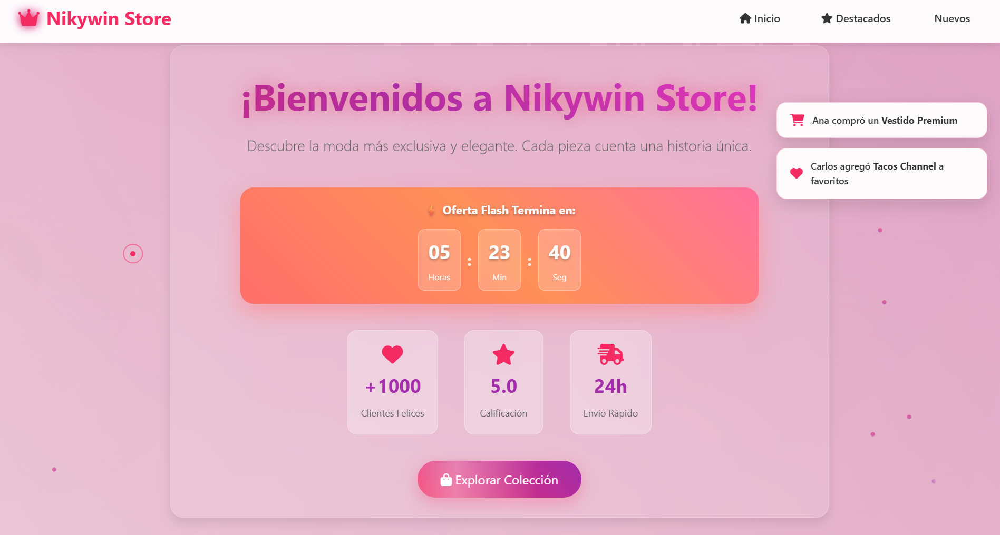
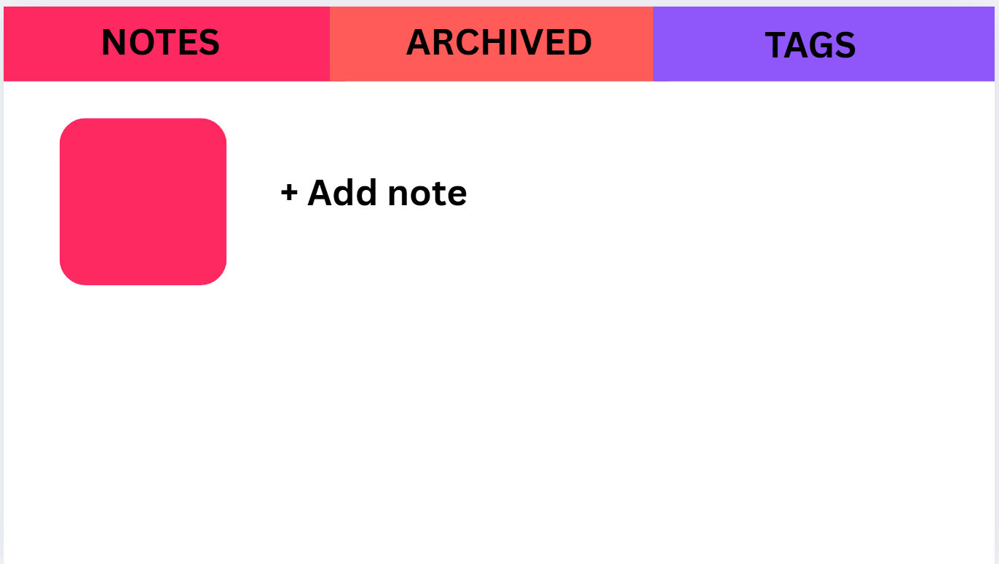
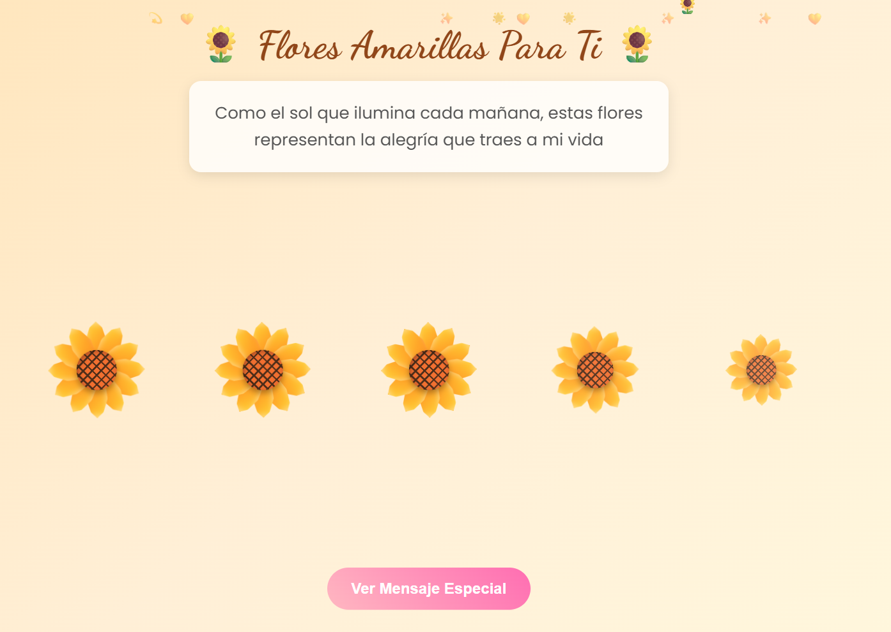
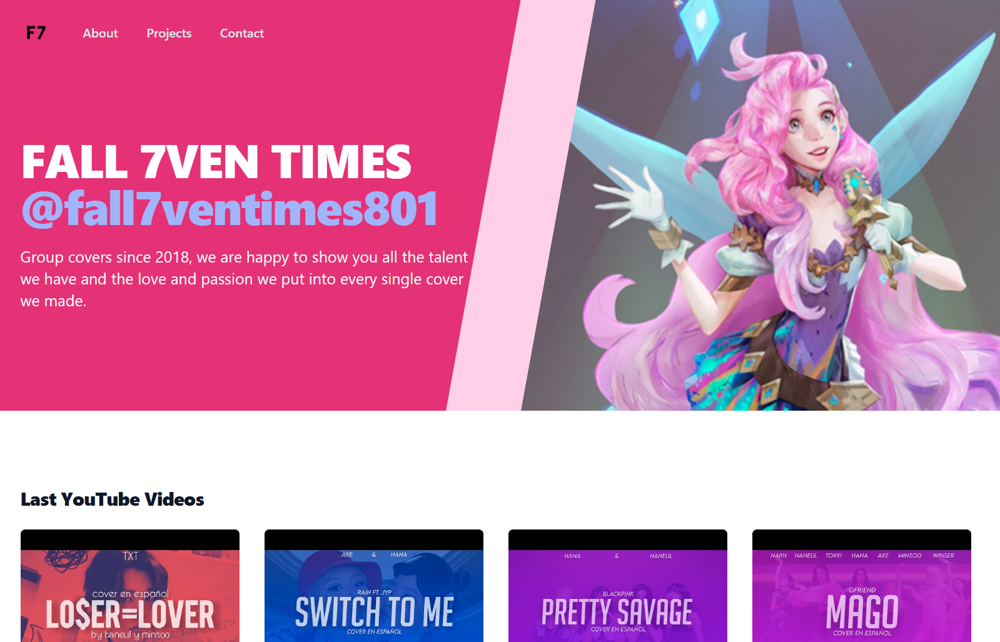

Mis Proyectos
Una colección de proyectos que demuestran mis habilidades y experiencia en desarrollo
Mis Proyectos
Una colección de proyectos que demuestran mis habilidades y experiencia en desarrollo
Project Summary This is a Full Stack Notes App built as part of a technical challenge. It allows users to create, edit, delete, archive, and filter notes by tags. The project is structured as a Single Page Application (SPA) using modern web technologies, and follows a clean architecture with separated concerns between frontend and backend.
Características principales:
- Can download notes as PWA
- Used PostgreSQL, Netlify and Render
- Modern UI with Tailwind CSS


Bienvenido a Yellow Flower, un proyecto web interactivo y visualmente encantador que transmite alegría y cariño a través de una animación de flores amarillas. Inspirado en la calidez del sol y el lenguaje simbólico de las flores, este proyecto busca ser un detalle especial para sorprender a alguien importante. 🌼
Características principales:
- Flores amarillas animadas con pétalos radiales y centro decorado tipo girasol.
- Estilo suave y armonioso con paleta pastel y gradientes cálidos.
- Animaciones suaves: aparición de flores, balanceo, caída de pétalos, corazones flotantes.
Pagina web de grupo de covers de Kpop en Youtube.
Características principales:
- Integración con la API de YouTube para mostrar videos.
- Interfaz moderna con Tailwind CSS

¿Interesado en colaborar?
Siempre estoy abierto a nuevas oportunidades y proyectos interesantes.